Four figures carry the result. Everything below them is supporting detail, folded away.
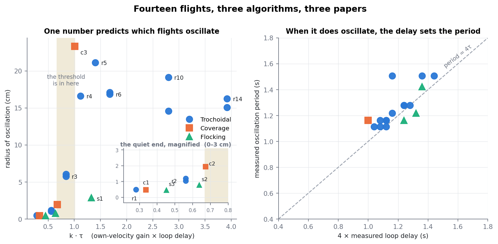
The result, in one figureEleven flights, three algorithms, three unrelated papers, plotted against a single number: the gain each law applies to a drone's own velocity, times the 0.28 s it takes that velocity to become thrust. Below k·τ ≈ 0.7 nothing oscillates. Above ≈ 1.0 everything does — and when it does, the period is 4τ regardless of which paper the law came from.
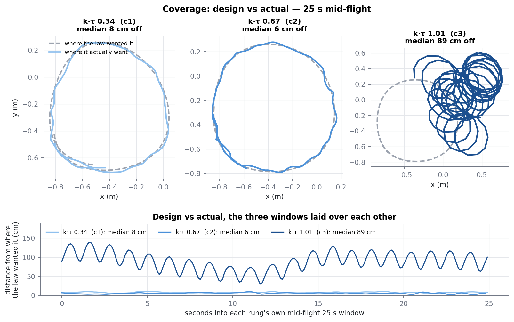
Coverage: the quiet algorithm, made to ring on purposeThe same law at three speeds. At k·τ 0.34 and 0.67 the drone flies where the law wanted it — 8 and 6 cm away. At k·τ 1.01 it misses by 89 cm and covers the room in loops. Coverage was the robust control condition; this is the first time the project produced a failure rather than found one.
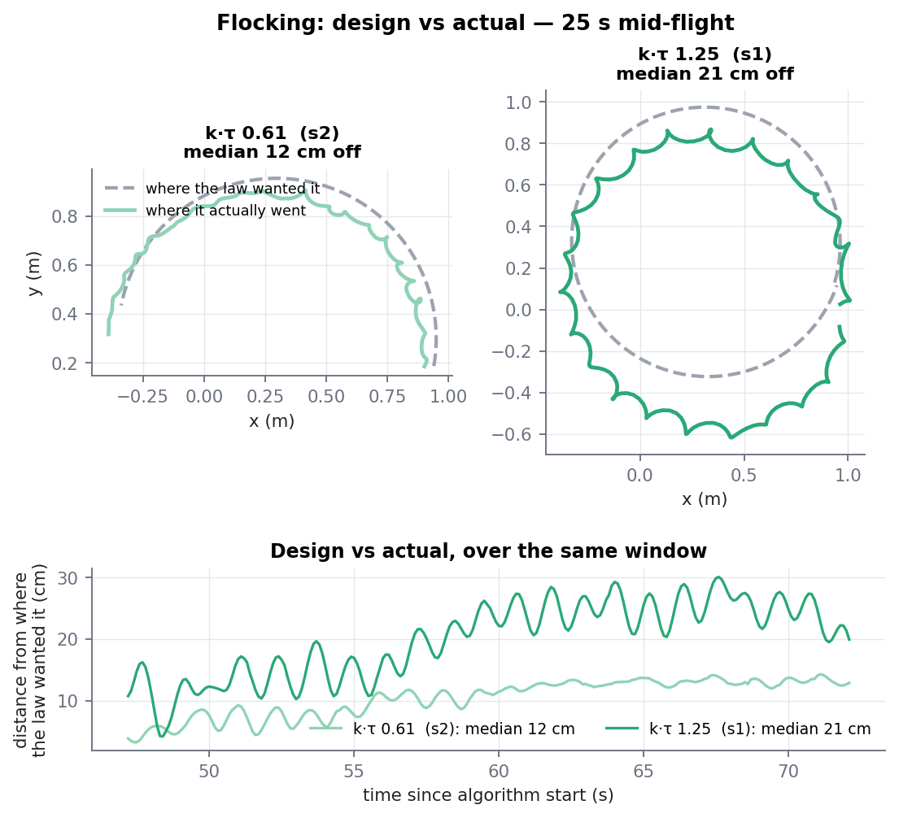
Flocking: the same fix, on a different paper's lawSlowing the clock — position gains ×c², velocity gains ×c, same lattice, same path — walks the drone from 21 cm off the designed position to 12 cm at half speed and 6 cm at a third, and the settled lattice error from +41% against simulation to −1% to −0.1%. The gap to simulation did not shrink; it closed.
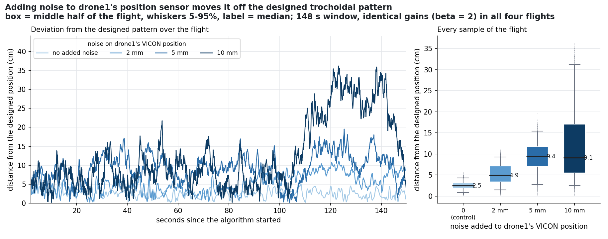
The first lever that widens the gap to simulationThree earlier sweeps moved a parameter inside the control law and left the hardware-vs-simulation gap untouched, which in hindsight they had to: simulation runs the same parameter. Noise on the position sensor is a property of the aircraft instead, and it walks the drone from 2.7 cm off the designed pattern to 15.4 cm — 72% of the pattern's own radius — with every gain held fixed.
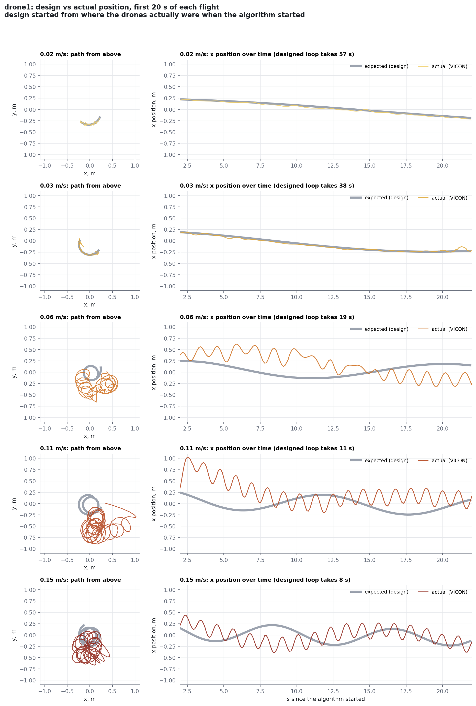
Trochoidal: where the ladder startedThe original finding, kept here for comparison: the designed pattern against what flew, across β = 1 to 14. The design is simulated from the real start positions, because the drones sat on each other's marks on 15 Sep.
Hotspot speed
Coverage at three hotspot speeds, gains untouched, all flown 22 Sep. k·τ is 0.67 in every run, so anything that changes here is the task getting harder, not the delay margin moving.
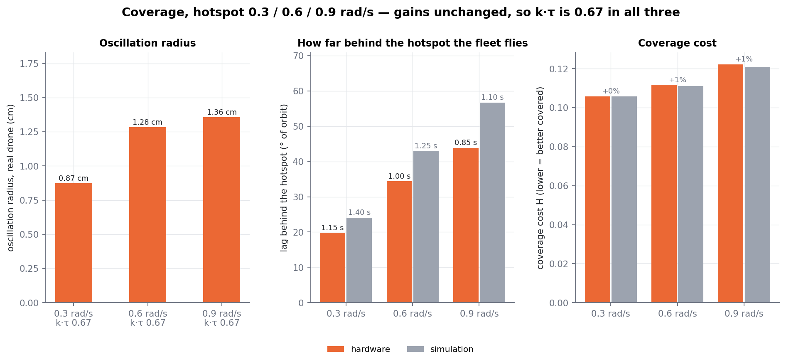
Hotspot speed: oscillation, lag and costThree hotspot speeds, same gains, so k·τ is 0.67 in all three. The oscillation barely moves. The fleet flies about a second behind the hotspot at every speed, which is a bigger and bigger part of an orbit as the hotspot speeds up. The coverage cost rises with it, and hardware stays within 1% of simulation of the same file.
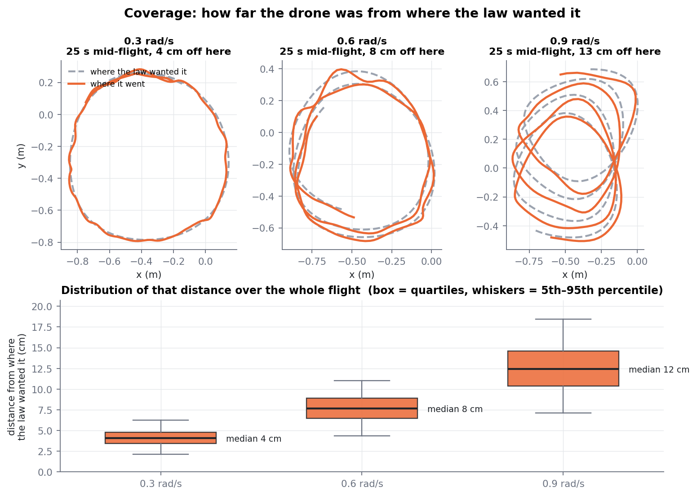
Hotspot speed: distance from the designed positionTop: where the law wanted the real drone against where it went, 25 s mid-flight. Bottom: the same distance at every row of the whole flight, so a run that is usually fine and occasionally bad cannot hide behind its median. 4 cm at 0.3 rad/s, 13 cm at 0.9, with the 95th percentile reaching 46 cm.
Graph topology
Flocking at three neighbour-graph topologies — 4, 5 and 6 edges — flown 23 Sep with gain_c2_alpha set per rung so k·τ stays at 0.53. The graph changes; the delay margin does not.
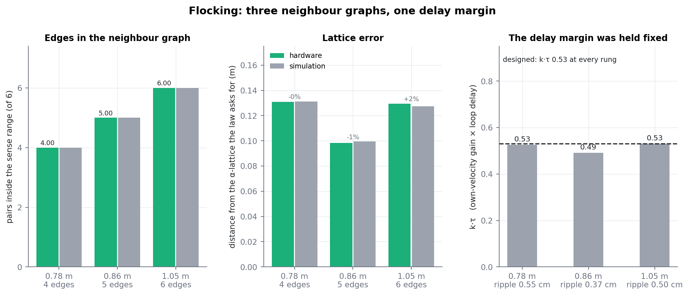
Three graphs, one delay marginLeft: the ladder set the graph it was designed to set — 4.17, 5.14 and 5.99 of the six possible pairs inside the sense range, against 4, 5 and 6 in simulation (the fractions are pairs sitting within a centimetre of the range, flickering in and out). Middle: the lattice is TIGHTEST at five edges, not six — the non-monotone result predicted from simulation, now confirmed on hardware. Right: k·τ held at 0.49–0.53 throughout, which is what makes the middle panel readable as a topology effect rather than a delay effect.
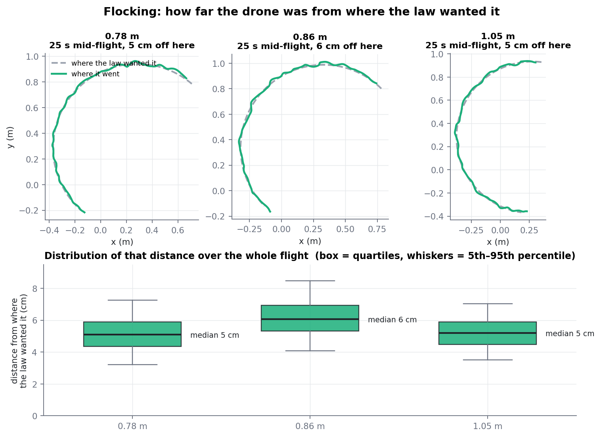
Graph topology: distance from the designed positionAll three rungs track their own design to 5–6 cm median with a 7–9 cm 95th percentile. Changing the neighbour graph does not change how faithfully the real drone follows the law — it changes what the law converges to.
Sensor noise
Trochoidal at β = 2 with artificial Gaussian noise added to drone1's VICON position — 0 (control), 2, 5 and 10 mm per axis, all four flown 23 Sep. Every other lever so far has been a parameter inside the control law, which cannot widen the gap to simulation by construction. This one is a property of the hardware, and it does.
Sensor noise: distance from the designed positionLeft: how far drone1 was from where the noiseless design put it, at every moment of four otherwise identical flights. Right: the same distance as a distribution, so a run that is usually fine and occasionally bad cannot hide behind its median. RMS deviation runs 2.7 / 5.8 / 10.0 / 15.4 cm, and the 95th percentile 4.3 / 9.3 / 15.4 / 31.2 cm. The control is flat across the flight; the noisy rungs drift further out the longer they fly.
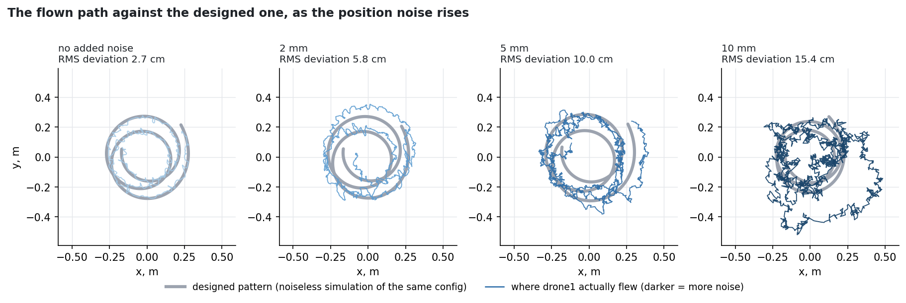
Sensor noise: the flown path against the designed oneThe same four flights seen from above, grey the noiseless simulation of the same config. The pattern is recognisable at 2 mm, ragged at 5 mm and barely a trochoid at 10 mm, where the RMS deviation is 72% of the 23 cm pattern radius.
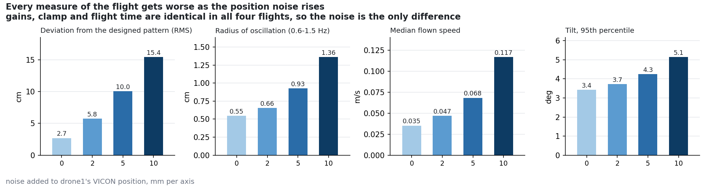
Sensor noise: four measures of the same flightsPattern deviation, oscillation radius, flown speed and tilt all rise monotonically with the noise. The drone chases its own measurement error: the least-squares velocity fit multiplies position noise by 11, the brake multiplies that by β, so 10 mm of position noise reaches the command as roughly 22 times its size.
Sense range
A NULL RESULT, kept for the reason it failed. Both rungs turned out to be the same neighbour graph, so there was nothing there to measure. The replacement ladder steps across graph topologies at fixed k·τ (configs …_s2_g4/g5/g6.yaml).
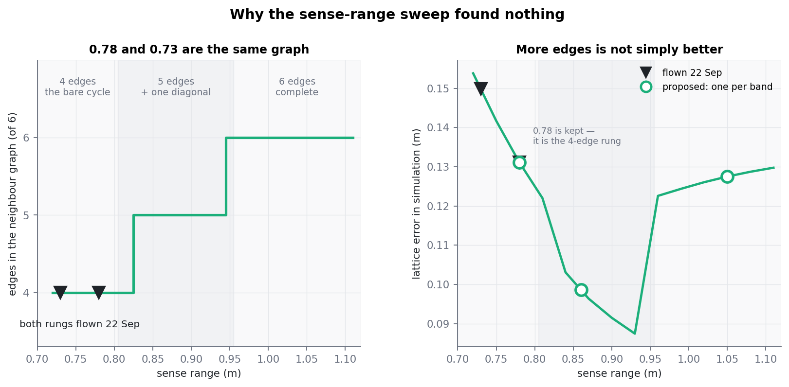
Why this sweep found nothingA 4-drone diamond has six possible edges — four sides and two diagonals — and which of them exist depends on where the sense range falls between the settled side (~0.57 m) and the settled diagonal (~0.81 m). Both flown rungs land in the 4-edge band, so they are the same graph squeezed slightly, and the algorithm refuses a sense range below the 0.70 m spacing, so that band is only 0.70–0.80 m wide. The lever should step ACROSS the bands instead, and the effect is not monotone: the 5-edge graph holds the tightest lattice.
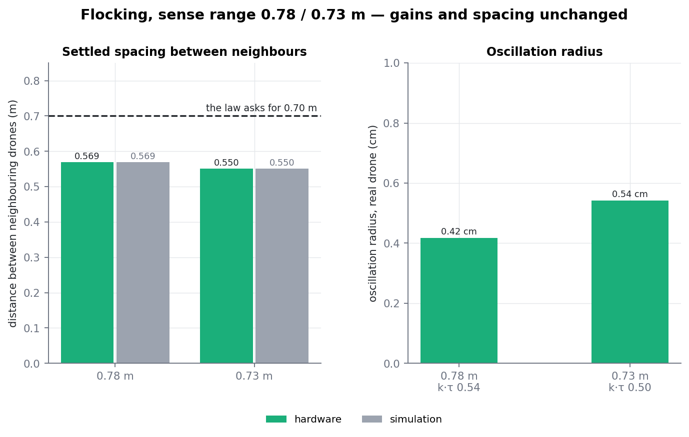
Sense range: spacing and oscillationLeft: the distance the flock actually settled on between neighbouring drones, against the 0.70 m the law was told to hold. It settles short of the target and shorter still as the sense range shrinks — and simulation does the same thing, so this is the law, not the hardware. Right: the ripple on the real drone.
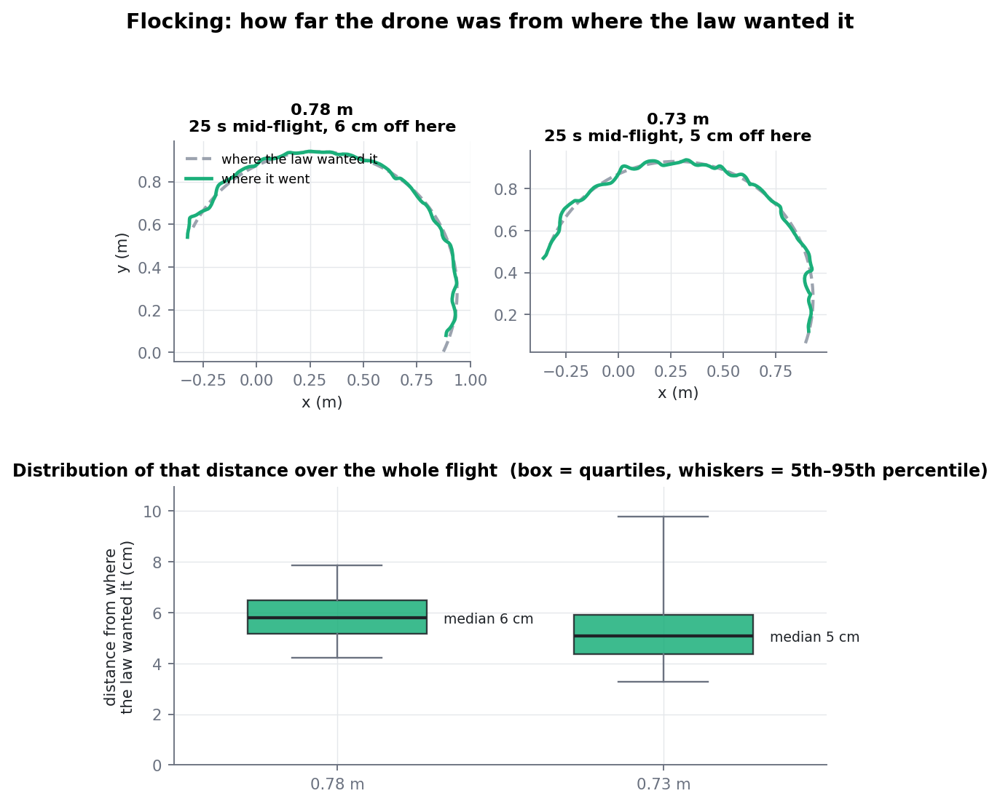
Sense range: distance from the designed positionWhere the law wanted the real drone against where it went, and the distribution of that distance over the whole flight. The drone tracks its own design more closely at the shorter sense range, 6 cm against 5 cm median, with a tighter spread.
Trochoidal
Eight rungs of the same pattern, β from 1 to 14. The rung where the oscillation starts is the whole result.
rung
k
k·τ
τ measured
wobble, real
wobble, sim'd
period
clipped
vs sim
r1
1.00
0.28
0.36 s
0.5 cm
—
1.51 s
0%
—
r2
2.00
0.56
0.34 s
1.0 cm
—
1.51 s
0%
—
r3
3.00
0.84
0.32 s
5.8 cm
—
1.28 s
0%
—
r4
4.00
1.12
0.31 s
16.6 cm
—
1.28 s
10%
—
r5
5.00
1.40
0.28 s
21.1 cm
—
1.11 s
95%
—
r6
6.00
1.68
0.31 s
16.8 cm
—
1.28 s
79%
—
r10
10.00
2.80
0.27 s
19.1 cm
—
1.11 s
94%
—
r14
14.00
3.92
0.26 s
16.2 cm
—
1.11 s
89%
—
Supporting figures (9)
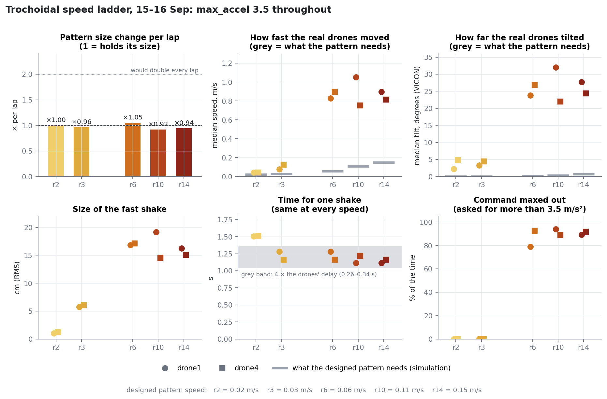
Wobble, tilt and clipping across the ladderOne row per rung, filled markers are the real drones. The step between β=3 and β=6 is where the command starts saturating and the wobble jumps by an order of magnitude.
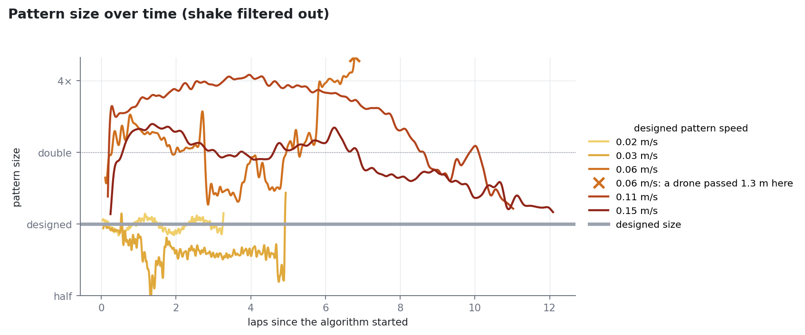
Pattern size per lap, against the designThe trochoid should hold its size. Above the threshold it does not, and the deviation is not a slow drift but a per-lap scaling.
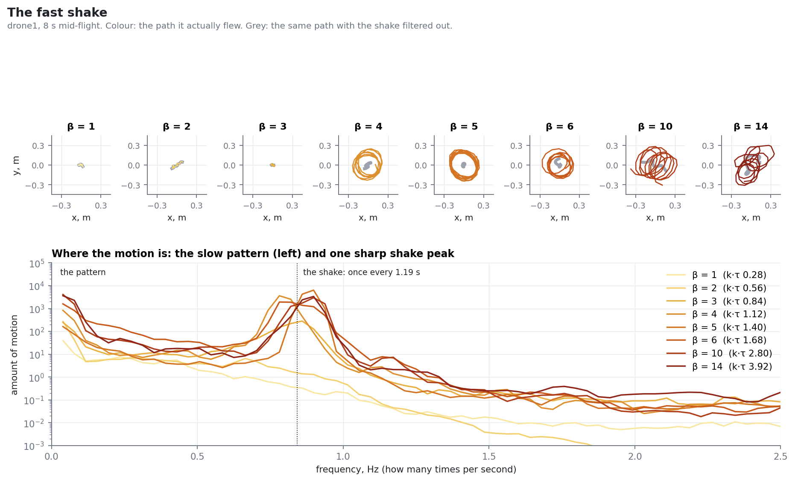
The wobble on its ownPosition band-passed to 0.6–1.5 Hz, so the designed pattern is removed and only the ripple is left. Loops, not noise.
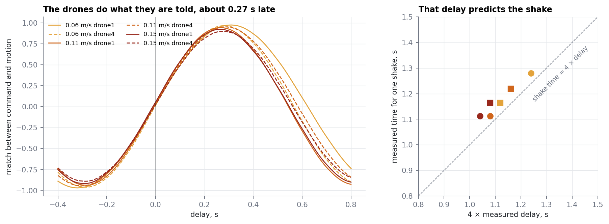
Loop delay, and the 4τ testCross-correlation of the command against the acceleration achieved. The peak is τ; the measured ripple period sits on the period = 4τ line.
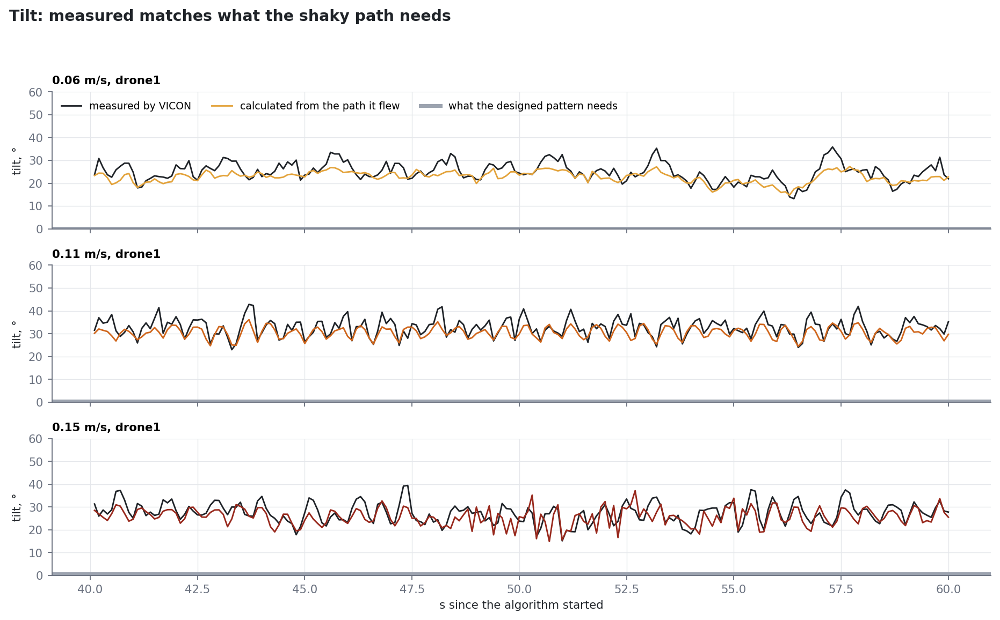
Bank angle demanded vs measuredTilt inferred from the path matches what VICON saw to 1–2°, which is what makes tilt usable as a proxy on older logs.
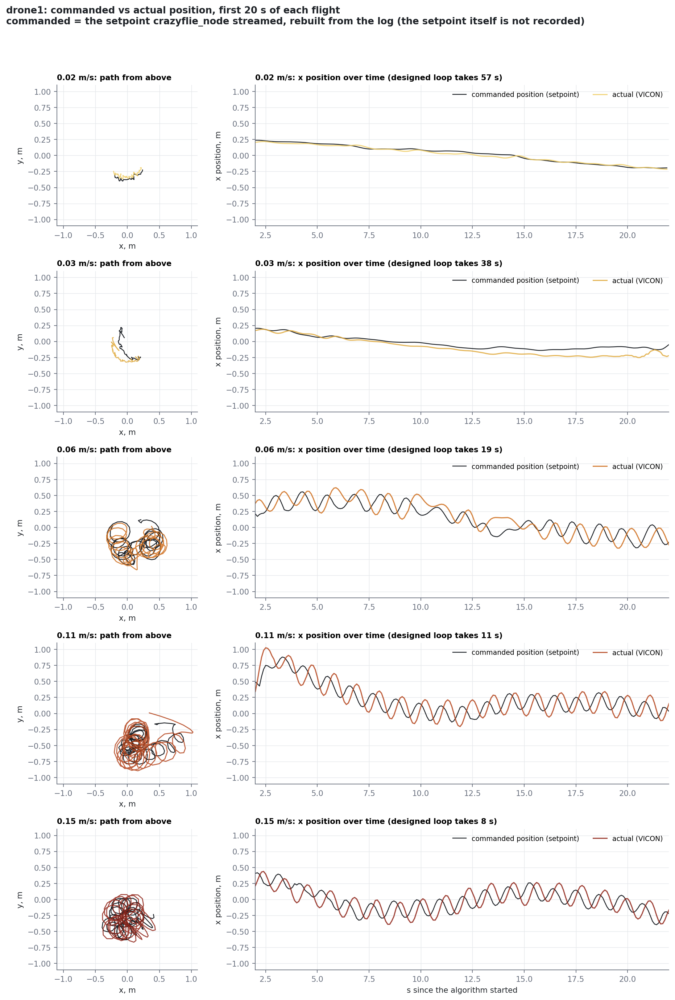
Commanded setpoint vs where the drone wasThe drone tracks its setpoint closely and late. The setpoint itself is what loops — worth being precise about, because it is not tracking error.
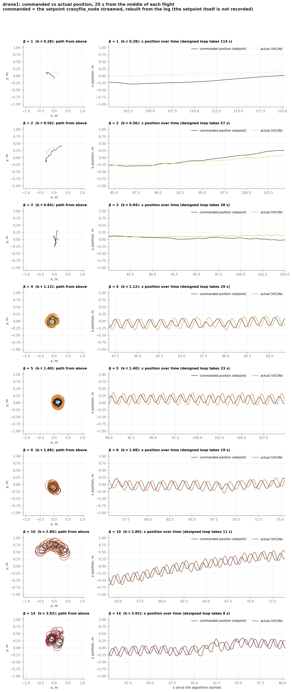
The same, mid-flightA middle slice, away from the start transient and the landing.
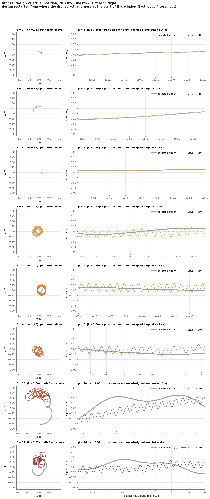
The same, mid-flightMiddle window, same reference.
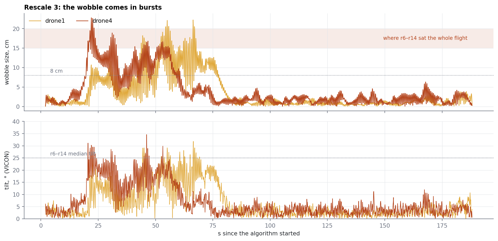
β=3: the wobble comes in burstsBelow the threshold the ringing decays, but it is re-excited — bursts that are not simultaneous across drones.
Coverage
Three speeds of the same coverage law chasing a moving hotspot. Coverage was the quiet algorithm, so this asks what it takes to make it ring.
rung
k
k·τ
τ measured
wobble, real
wobble, sim'd
period
clipped
vs sim
c1
1.20
0.34
0.35 s
0.5 cm
0.0 cm
1.60 s
0%
-3%
c2
2.40
0.67
0.27 s
1.9 cm
0.1 cm
1.28 s
0%
-2%
c3
3.60
1.01
0.25 s
23.3 cm
3.0 cm
1.16 s
79%
+15%
Supporting figures (5)
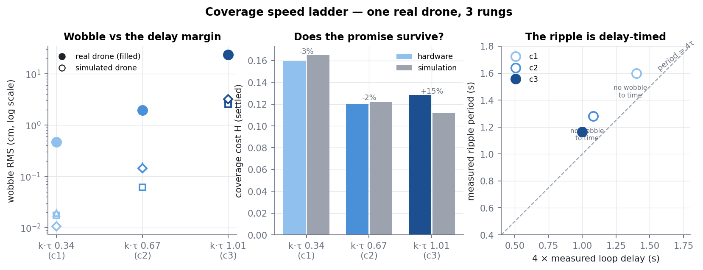
Wobble, the promised property, and the 4τ testLeft: ripple per drone against the designed k·τ, filled = real. Middle: the property the theorem promises, hardware against the same config in simulation. Right: measured ripple period against 4 × the measured delay.
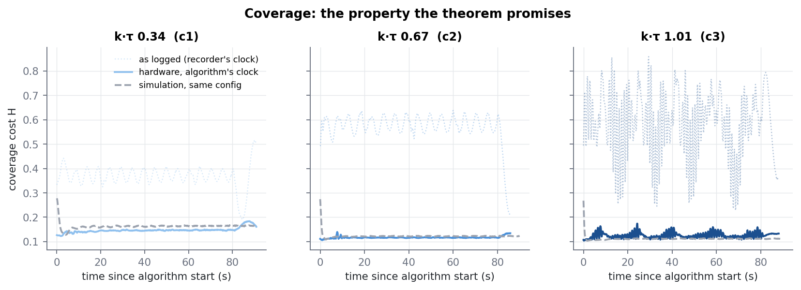
The promised property over timeOne panel per rung, hardware against simulation of that same file. A gap here is gap B — the physical layer — because simulation has already absorbed every modelling choice.
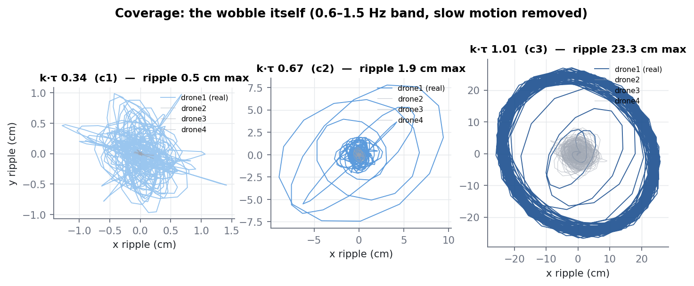
The wobble itselfPosition band-passed to 0.6–1.5 Hz. Closed loops mean a sustained oscillation; a scribble means noise.
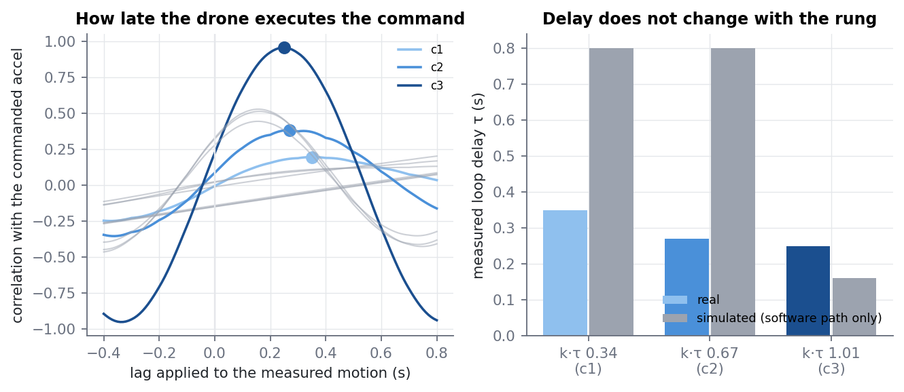
Loop delay per rungLeft: the correlation curves, peak = τ. Right: real drones against the simulated ones, which share the software path but have no radio, motors or tilt — the difference is the physical half of the delay.
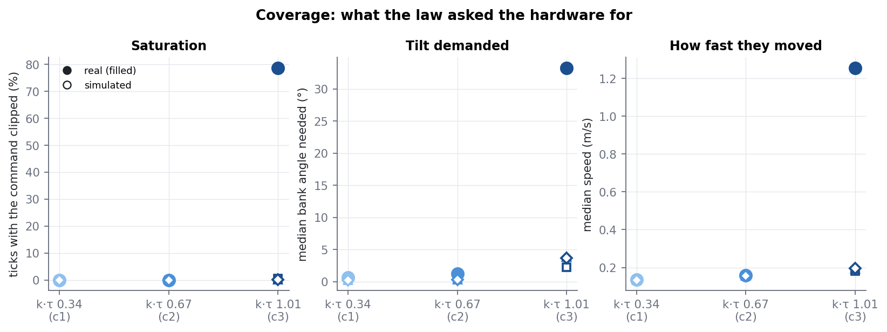
What the law asked the hardware forSaturation, bank angle and speed per rung. Clipping is the thing that turns a growing oscillation into a fixed-size one.
Flocking
The same flock, rescaled in time so k·τ drops from 1.3 to 0.4 without changing the lattice or the path.
rung
k
k·τ
τ measured
wobble, real
wobble, sim'd
period
clipped
vs sim
s3
1.61
0.45
0.34 s
0.5 cm
0.0 cm
1.42 s
0%
-0%
s2
2.28
0.64
0.33 s
0.8 cm
0.1 cm
1.22 s
0%
-1%
s1
4.72
1.32
0.31 s
2.9 cm
0.9 cm
1.16 s
83%
+41%
Supporting figures (5)
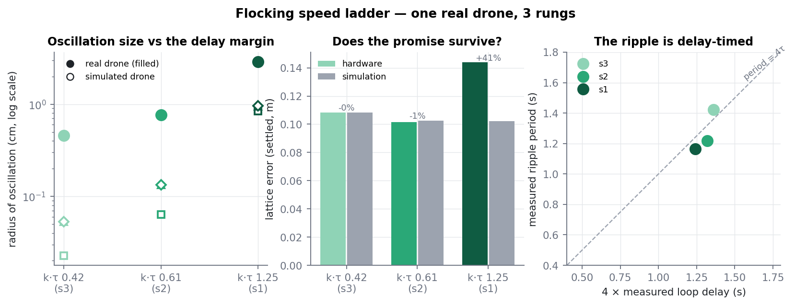
Wobble, the promised property, and the 4τ testLeft: ripple per drone against the designed k·τ, filled = real. Middle: the property the theorem promises, hardware against the same config in simulation. Right: measured ripple period against 4 × the measured delay.
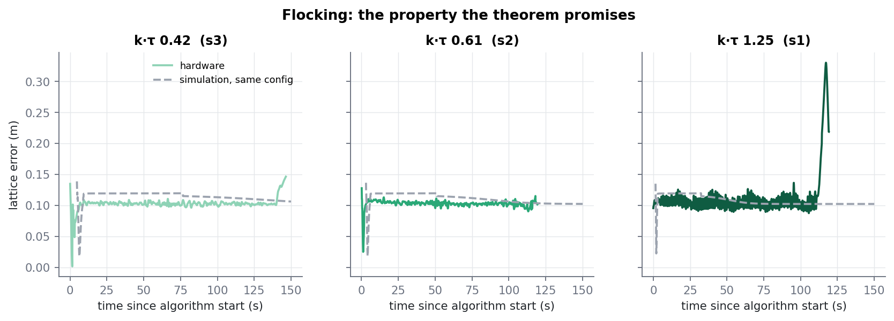
The promised property over timeOne panel per rung, hardware against simulation of that same file. A gap here is gap B — the physical layer — because simulation has already absorbed every modelling choice.
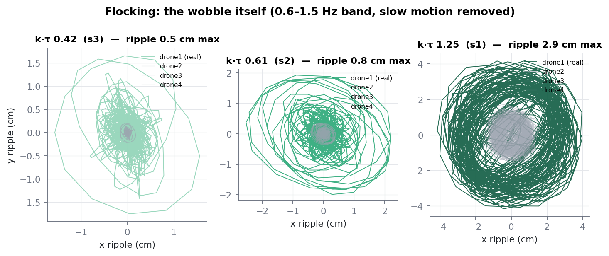
The wobble itselfPosition band-passed to 0.6–1.5 Hz. Closed loops mean a sustained oscillation; a scribble means noise.
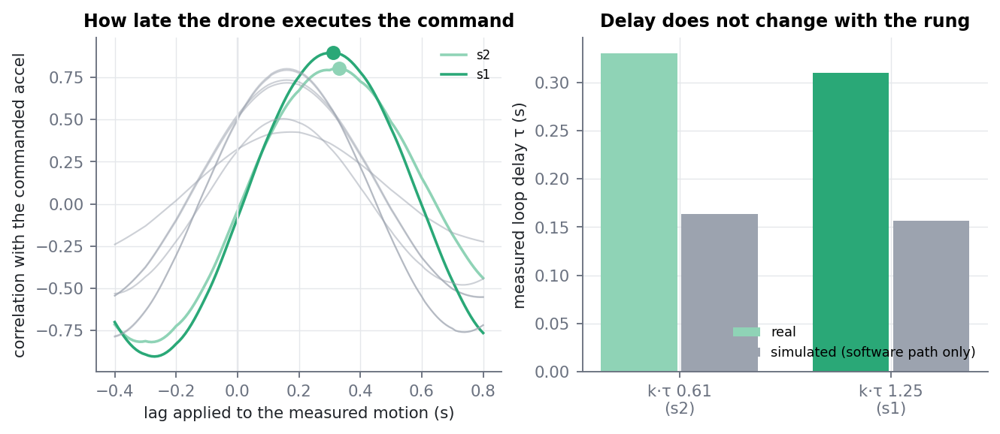
Loop delay per rungLeft: the correlation curves, peak = τ. Right: real drones against the simulated ones, which share the software path but have no radio, motors or tilt — the difference is the physical half of the delay.
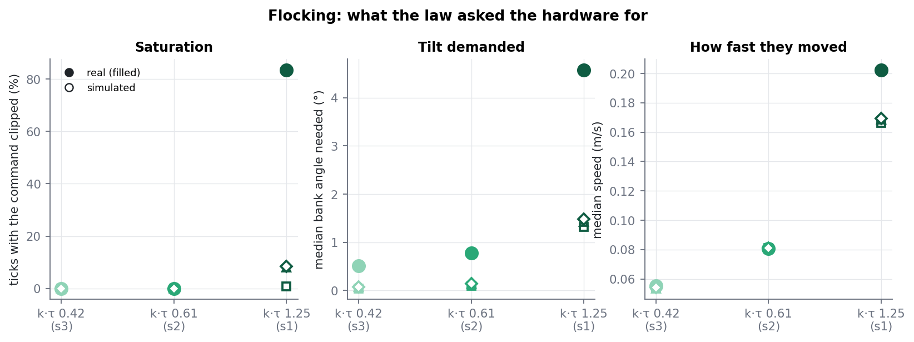
What the law asked the hardware forSaturation, bank angle and speed per rung. Clipping is the thing that turns a growing oscillation into a fixed-size one.